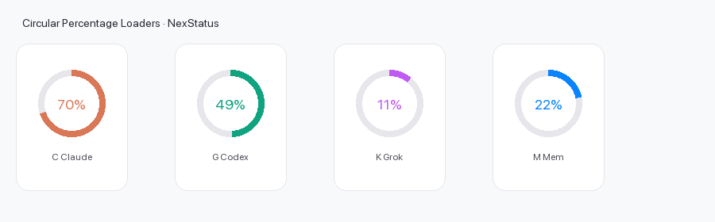
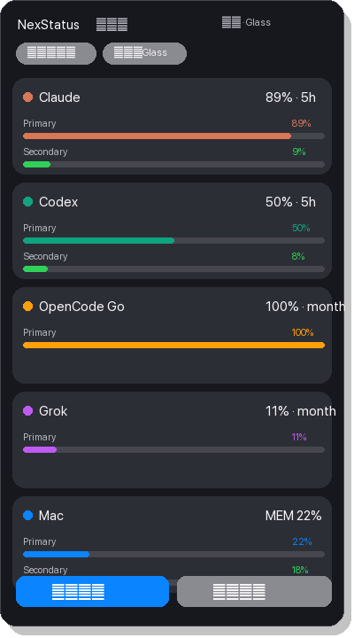
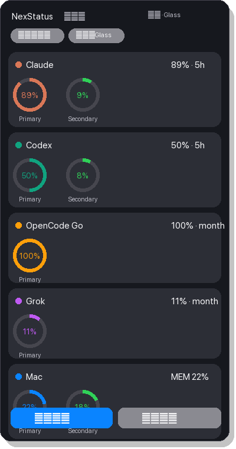

Claude, Codex, OpenCode Go, Grok credits, and Mac memory — unified in a Control Center–style glass panel. No keys written to the snapshot.
Styles you can switch
Tap 圖表 in the panel to switch between long bars and rings — like status gauges, not just text.



Why NexStatus
Stop opening five apps to check whether Claude, Codex, Go, or Grok is about to rate-limit you.
Long bars or circular gauges. Themes: Glass, Paper, Mono, Nord — cycle from the panel toolbar.
Tokens stay local for probes. Snapshots never store API keys. Secrets stay off the repo.
git clone https://github.com/awe7893625/NexStatus.git cd NexStatus ./scripts/install.sh
Needs macOS + Hammerspoon + Python 3. Optional: Claude Code, Codex, OpenCode Go, Grok CLI for each usage source.
Security review
~/.cache/nexstatus/status.json holds percentages, not tokens.• Upload your chats or vault notes
• Commit auth.json or env files
• Expose Tailscale / home paths in public docs
• Require a cloud account for the MenuBar itself